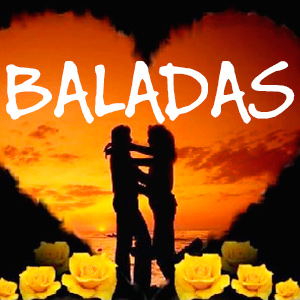
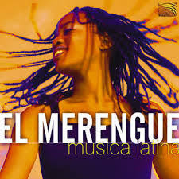
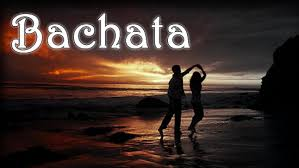
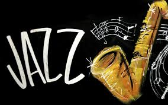
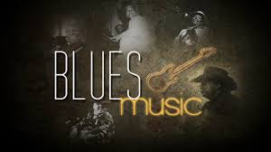
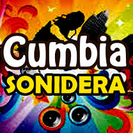
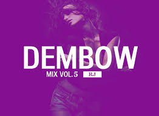
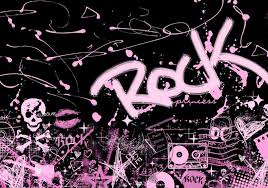

Generos Musicales
Baladas
La balada es una forma de expresar el canto cortesano del final de la Edad Media en Europa, que aparece en el siglo XIV. La poesía es disociada de la música, pero la musicalidad es creada en la escritura misma del poema. En efecto, la balada tiene la particularidad de repetir un mismo verso, estribillo, al final de cada tres estrofas. Está constituida por octosílabas y las rimas están cruzadas. Como regla, la balada medieval empieza siempre con la palabra Príncipe. Aunque no hay que confundir la balada romántica (poesía) y la balada que veremos ahora.
BaladasMerengue
El merengue es un género musical bailable originado en la República Dominicana a finales del siglo XIX. Es muy popular en Hispanoamérica, donde es considerado, junto con la salsa, como uno de los grandes géneros musicales bailables que distinguen el gentilicio latinoamericano. En sus orígenes, el merengue dominicano era interpretado con instrumentos de cuerda (bandurria y/o guitarra). Años más tarde, los instrumentos de cuerda fueron sustituidos por el acordeón, conformándose así, junto con la güira y la tambora, la estructura instrumental del conjunto de merengue típico. Este conjunto, con sus tres instrumentos, representa la síntesis de las tres culturas que conformaron la idiosincrasia de la cultura dominicana.
MerengueSalsa
Salsa es el término comercial usado desde finales de los años 1960 para definir un género musical hispano, resultante de la síntesis del son cubano y otros géneros de música caribeña, con el jazz y otros rítmos estadounidenses. La salsa tiene variedades puertorriqueña, venezolana, dominicana, colombiana y de otros países de Latinoamérica. De esta síntesis nació también el jazz afrocubano y el jazz latino, que tiene influencias de otros países también.
SalsaBachata
La bachata es un género musical bailable originario de la República Dominicana, dentro de lo que se denomina folclore urbano. Está considerado como un derivado del bolero rítmico, influenciado por otros estilos como el son cubano y el merengue.
BachataJazz
El jazz (pron. /ʤæz/ en inglés, /ʝas/ en español1 ) es un género musical nacido a finales del siglo XIX en Estados Unidos, que se expandió de forma global a lo largo de todo el siglo XX.Entre los muchos intentos de delimitar y describir el complejo fenómeno del jazz, el crítico y estudioso alemán Joachim-Ernst Berendt, en su obra clásica El jazz: de Nueva Orleans al jazz rock.
JazzBlues
El blues (cuyo significado es melancolía o tristeza) es un género musical vocal e instrumental, basado en la utilización de notas de blues y de un patrón repetitivo, que suele seguir una estructura de doce compases. Originario de las comunidades afroamericanas de Estados Unidos, se desarrolló a través de las espirituales, canciones de oración, canciones de trabajo, rimas inglesas, baladas escocesas e irlandesas narradas y gritos de campo.
BluesCumbia
La cumbia es un ritmo musical y baile folclórico tradicional de Colombia.1 2 Posee contenidos de tres vertientes culturales, principalmente indígena y negra africana y, en menor medida, blanca (española), siendo fruto del largo e intenso mestizaje entre estas culturas durante la Conquista y la Colonia.
CumbiaRap

El rap es un género musical desarrollado en Norteamérica, pero más desarrollado a finales de la década de los 60 entre la comunidad afroamericana de los Estados Unidos. En la cultura hip hop (surgida en el South Bronx de Nueva York a mitad de los 70s) es uno de sus cuatro pilares fundamentales, llamado hip hop. Usualmente es llamado hip-hop de forma imprecisa. Suele recitarse de manera Acapella.
RapMusica Electronica
La música electrónica es aquel tipo de música que emplea para su producción e interpretación de instrumentos electrónicos y tecnología musical electrónica. En general, puede distinguirse entre el sonido producido utilizando medios electromecánicos de aquel producido utilizando tecnología electrónica que también puede ser mezclada. Ejemplos de dispositivos que producen sonido electro mecánicamente son el telarmonio, el órgano Hammond y la guitarra eléctrica. La producción de sonidos puramente electrónica puede lograrse mediante aparatos como el theremin, el sintetizador de sonido y el ordenador.
Musica ElectronicaDenbow
El dembow1 es un género electrónico musical originario de Jamaica2 y se desarrolló hacia mediados de la década de 1980. Aunque este tipo de música ha tenido un auge desde mediados de la década de 1990 y comienzo de la década de 2000, sus orígenes se remontan con influencias de rap y hip hop.
DembowRock
El rock es un término amplio que agrupa a una variedad de géneros musicales. Su forma originaria, conocida como rock and roll, surgió mayormente de la combinación de dos géneros anteriores como eran el rhythm and blues y el country. La música rock también se nutrió fuertemente del blues y el folk, e incorporó influencias del jazz, la música clásica y otras fuentes.
RockMusica Pop
música pop (del inglés pop music, contracción de popular music) es un género de música popular que tuvo su origen a finales de los años 1950 como una derivación del rock and roll, en combinación con otros géneros musicales que estaban en moda en aquel momento.1 2 Los términos música pop y música popular se usan a menudo de manera indistinta, aunque el segundo tiene un sentido más amplio al dar cabida a otros géneros distintos del pop que se consideren populares.
Musica Pop